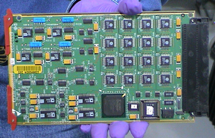

Proprietary to General Electric
Direction 5224328-800, Rev# 5
Dir 5224328-800 LightSpeed 5.X HP60 Limited Access Service
Methods - Adv.
Proprietary to General Electric |
| Required Persons | Preliminary Reqs | Procedure | Finalization |
|---|---|---|---|
| 1 |
The following procedure should be followed when DAS Converter boards and/or chassis need cleaning, or Converter boards are replaced for microphonics or noise resulting in image artifacts (rings, bands, streaks and smudges).
| Last Revised: | March 15, 2005 |
| Item | Qty | Effectivity | Part# | Manufacturer | |
|---|---|---|---|---|---|
| Static Wrist Strap and cord | 1 | - | - | - | |
| Lint free towels | - | - | - | ||
| Amax Contact and Circuit Cleaner | 1 | - | - | - | |
| DAS/DET Interface Kit: Contains Nitrile Gloves, Aero Duster Spray System (spray nozzle) for use with Aero Duster, and static bags needed by this procedure. | 1 | - | - | - | |
| Aero Duster | 1 | - | - | - | |
| Screw driver (flat) size # 6 | 1 | - | - | - | |
| High Output Ionizing Fan (Refer to the ESD Management and Device Handling procedure located under “Safety” for proper use instructions) | 1 | - | - | - | |
| Store Amax Cleaner at Site with MSDS document. | |
| Do not store in the company car. | |
| Use spray as directed in this procedure. Safety glasses and Nitrile gloves must be worn when using the spray. |
| Mishandling can easily damage converter cards. Handle only on the sides and only with proper ESD protection. Do not touch the connector, any board components, or circuit traces. Fingerprints are resistive circuit elements at low detector signal levels. Cards should always be placed in a Static Bag when not in the DAS. | |
| When using Aero Duster, do not invert the can as this will cause liquid to come out. Testing has shown that this can cause a large static charge to develop where the liquid spray hits. | |
| NOTE: | Take DC Noise and DC Offsets baseline scan using DASTOOLS Manual test (use default settings) to establish the current noise characteristics of DAS. Do not troubleshoot any noise failures until after the cleaning. |
Use the DASTools Viewlog to view the results of the baseline noise test to see the channels that violate the noise specification. The specifications are shown next to the actual data for the failed channels and shows the converter card number.
Position the table to its lowest position. You will be sitting on the edge of the cradle to work on the DAS.
Remove gantry right side cover, and turn OFF all three (3) service switches on the STC backplane.
Continue to open the gantry by removing the following:
Mylar scan window.
Left side cover.
Top covers.
Front cover.
Lock the gantry in position, using the rotational lock.
Refer to “Rotational Locking Pin,” in Equipment Service - Gantry (located in the Safety tab of this publication).
All protective ESD materials should be in place (i.e. wrist straps and grounded mats for laying out converter cards; ionizing fan set up at far end of the patient table).
Rotate and lock the gantry so that the DAS chassis you are working with is at 6 O’clock position, so that run off from the spray cleaner does not get onto the detector.
Use the #6 screwdriver to remove the cover of the DAS chassis that has the suspected bad card(s).
Remove the suspected noisy converter card(s) and place it (them) in static free bags. Also remove the neighboring cards to the “bad” card and place them in static free bags. Mark down the slot positions of all removed cards so they can be put back in the same slots after cleaning.
At this point, examine the DAS for dust. If there is dust in the DAS, perform the inspection and cleaning procedure as prescribed in the MDAS 16 General Cleaning. If there are still noisy channels after completing the DAS cleaning procedure, repeat this cleaning procedure starting from step 1. If there was not any dust inside the DAS, continue with this procedure.
Install the Aero Duster Spray System nozzle on the Aero Duster can and spray off the backplane connector from which the cards were removed. Hold the can upright to prevent liquid discharge.
Use the Amax Contact Cleaner spray with the plastic tube to focus the spray to clean the backplane connectors of the suspected “bad” card location. Apply only enough to wet the entire backplane connector(s). Amax Contact Cleaner dries extremely fast. Do not spray directly on the detector.
Let the backplane dry for two minutes. Do not spray air in the chassis to dry the cleaner.
Remove the converter cards (see Illustration 1) one at a time from their static bags and spray the components and connector (see Illustration 2) with it facing down. Spray the outside of the connector shroud on all sides and also spray inside the pin housing. (Give it a good soaking). Allow the card to air dry. Do not use the Aero Duster to dry it.
Illustration 1: Proper method for handling converter cards

Illustration 2: Cleaning with Amax, connector facing down

Illustration 3: Correct Board position for Amax to dry

Use the ionizing fan on the empty chassis and on clean converter cards before re-insertion into the chassis.
Reinstall cards in the same slots from which they were taken.
Turn the DAS ON and let it warm up. It takes two (2) minutes of warm-up time for every minute the DAS was turned OFF, up to one (1) hour.
Verify all covers are installed, turn on DAS power and complete the following tests within DASTOOLS.
1 iteration of DC Noise and DC Offsets.
1 iteration of Pop Noise and Microphonics.
All tests must pass. If not, troubleshoot and correct the failures. See the DAS Troubleshooting procedures contained in Data Acq: Detector FET Control for reference.
Verify Image Quality by running 48cm Phantom Img Series Verif (LS 16, Ultra, Plus)